Chapter 8 Distributions & ggplot2
8.1 Setup and data
Let’s load the {tidyverse} package, which includes the {ggplot2} package that we will use for plotting:
library(tidyverse)For the first set of visualizations, we use the ChickWeight data set that comes with R. Let’s look at the first few lines:
head(ChickWeight)## Grouped Data: weight ~ Time | Chick
## weight Time Chick Diet Treat
## 1 42 0 1 1 1
## 2 51 2 1 1 1
## 3 59 4 1 1 1
## 4 64 6 1 1 1
## 5 76 8 1 1 1
## 6 93 10 1 1 1It can be useful to look at the last lines as well:
tail(ChickWeight)## Grouped Data: weight ~ Time | Chick
## weight Time Chick Diet Treat
## 573 155 12 50 4 2-3-4
## 574 175 14 50 4 2-3-4
## 575 205 16 50 4 2-3-4
## 576 234 18 50 4 2-3-4
## 577 264 20 50 4 2-3-4
## 578 264 21 50 4 2-3-4To summarize the dataset:
summary(ChickWeight) #dataset is present in the workspace with the dataset name## weight Time Chick Diet Treat
## Min. : 35.0 Min. : 0.00 13 : 12 1:220 Length:578
## 1st Qu.: 63.0 1st Qu.: 4.00 9 : 12 2:120 Class :character
## Median :103.0 Median :10.00 20 : 12 3:120 Mode :character
## Mean :121.8 Mean :10.72 10 : 12 4:118
## 3rd Qu.:163.8 3rd Qu.:16.00 17 : 12
## Max. :373.0 Max. :21.00 19 : 12
## (Other):5068.2 Multiple distributions
8.2.1 Plotting the data
You see that you have 4 columns, most importantly weight. There are 3 columns with ‘metadata’: the Time that a chick weighed, which Chick, and its Diet. Let’s plot the weight versus Time:
ggplot(data = ChickWeight, aes(x=Time, y=weight)) +
geom_point()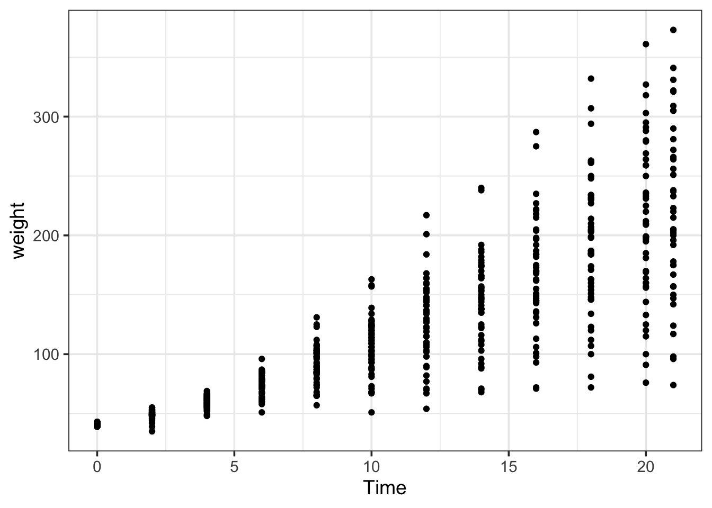
Let’s change the defauklt theme to set the background of the plot panel to white:
theme_set(theme_light(base_size = 14))The points are overlapping. To reduce overlap, we can introduce random displacement, also known as jitter. The width can be used to control the amount of jitter:
ggplot(data = ChickWeight, aes(x=Time, y=weight)) +
geom_jitter()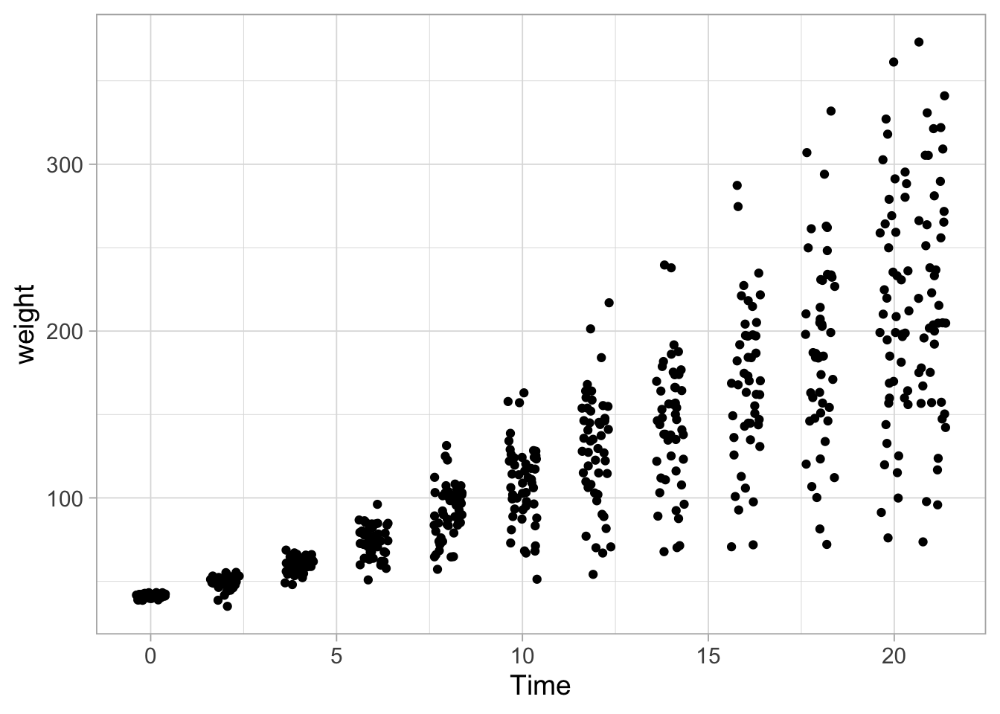
Since there is still overlap, the dots can be made more transparent:
ggplot(data = ChickWeight, aes(x=Time, y=weight)) +
geom_jitter(width = 0.25, alpha=0.5)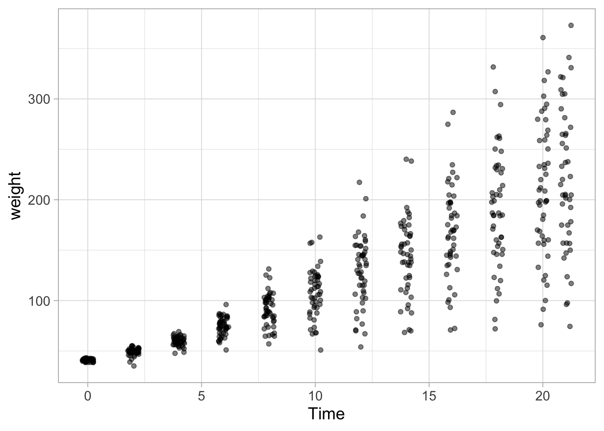
8.3 Boxplots
There are several ways to summarize the distribution of the data. The most common are barplots, boxplots and violinplots. The barplot is an over simplication of the data that only depicts the average. This type of summary should be avoided, see here for more about that. Boxplots and violinplots are better suited as summaries.
In a boxplot, the values that are depicted by default are:
- the median (big bar in the middle = the 50th percentile)
- the 25th and 75 percentiles (ends of the box = quartiles)
- the whiskers extend to the last points within 1.5 * IQR from the quartiles (IQR is the interquartile range, i.e. the range between the box’s ends)
- all points that lie outside are plotted as points (outliers)
Here we go:
ggplot(data = ChickWeight, aes(x=Time, y=weight)) + geom_boxplot()## Warning: Continuous x aesthetic -- did you forget aes(group=...)?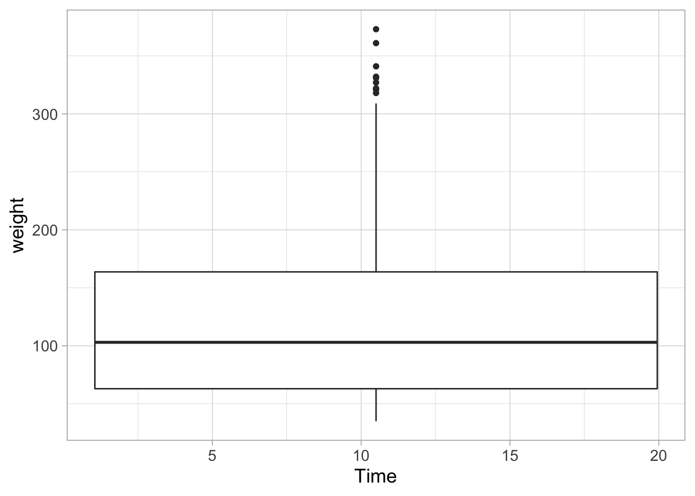
In the plot above, all data is used for the summary, so we should indicate that we want to group the data by time:
ggplot(data = ChickWeight, aes(x=Time, y=weight, group=Time)) + geom_boxplot()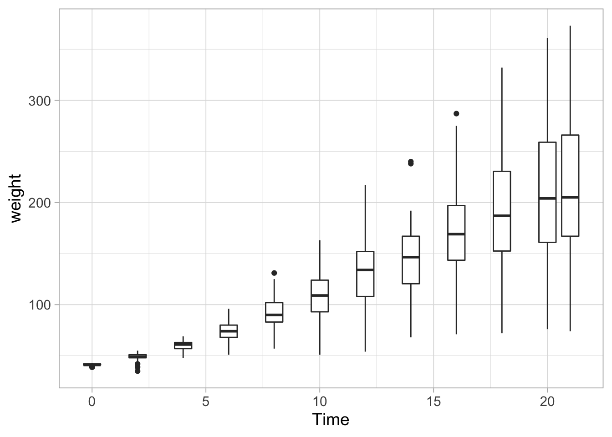
Since different data distribution can give rise to the same boxplot, it is still useful to plot the data:
ggplot(data = ChickWeight, aes(x=Time, y=weight, group=Time)) +
geom_jitter(width = 0.25, alpha=0.5) +
geom_boxplot()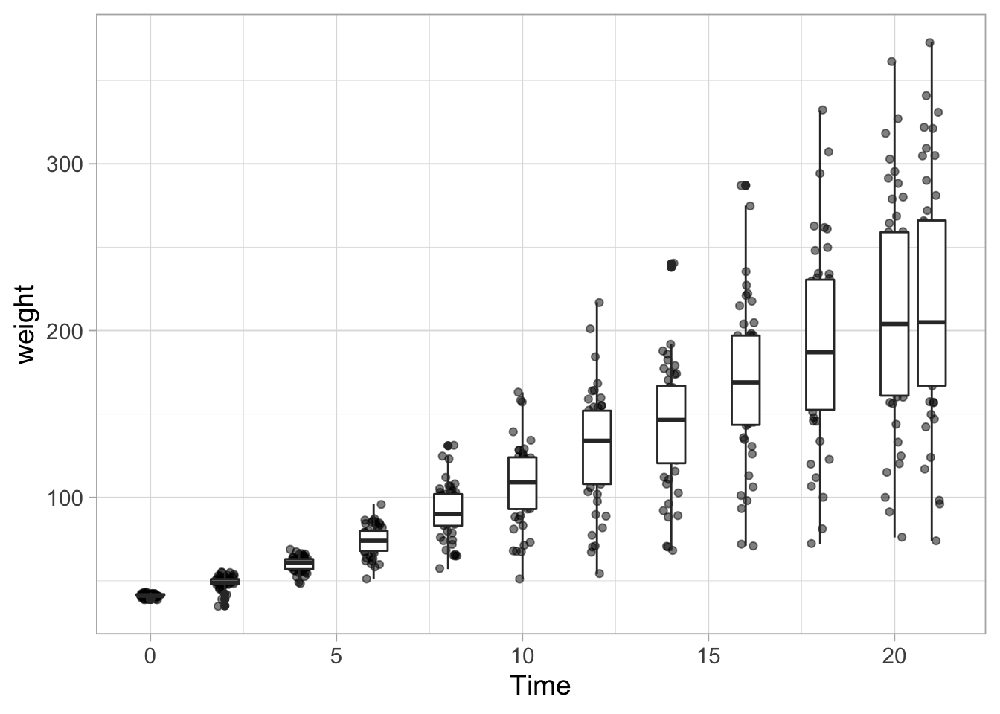
The boxplot is now on top of the data. This can be solved by changing the order of the the layers or by changing the fill color of the boxplot:
ggplot(data = ChickWeight, aes(x=Time, y=weight, group=Time)) +
geom_jitter(width = 0.25, alpha=0.5) +
geom_boxplot(fill=NA)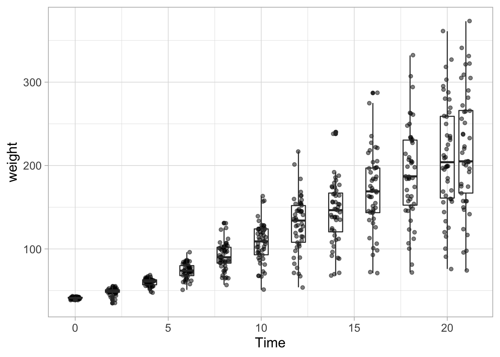
One other thing needs to be fixed. The outliers are plotted twice. Once as a jittered dot and once as outlier of the boxplot. To remove the outlier from the boxplot we use:
ggplot(data = ChickWeight, aes(x=Time, y=weight, group=Time)) +
geom_jitter(width = 0.25, alpha=0.5) +
geom_boxplot(fill=NA, outlier.shape = NA)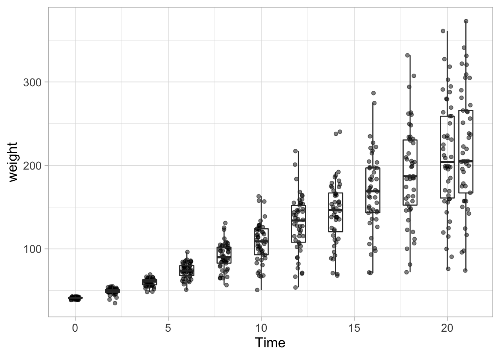
This graph looks a bit funny, since the Time points are not equally spaced. There is a difference of 2 for almost all, execpt for the last two time points which are 20 and 21. When there is continuous data on the x-axis (e.g. time, length, concentration) it makes sense to use those data for the x-axis position. However, we could also treat the x-axis data as labels or categories (instead of numbers). This would result in equal spacing, although the values are not equally spaced. To do this, we need to convert the Time data to a ‘factor.’ This can be done in the dataset or directly in the ggplot command as shown below:
ggplot(data = ChickWeight, aes(x=as.factor(Time), y=weight, group=Time)) +
geom_jitter(width = 0.25, alpha=0.5) +
geom_boxplot(fill=NA, outlier.shape = NA)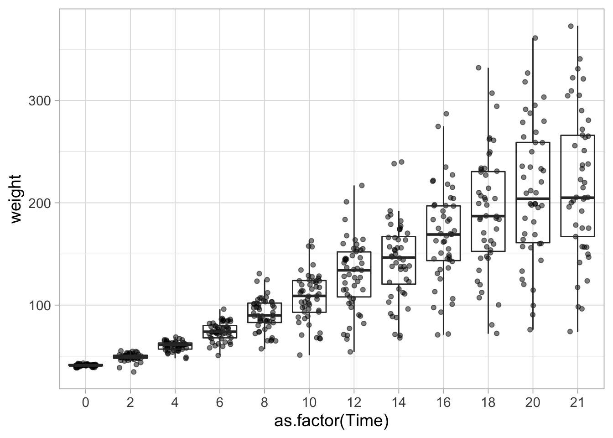
Another explanation of discrete versus quantitative data on the x-axis with ggplot example code can be found here.
The boxplot is a summary of the data that shows the midpoint of the data (median = middle line), the middle 50% of the data (the box) and the extremes with the whiskers. The exact defenition can vary between the different whiskers, to it’s a good idea to check that. From the geom_boxplot() webpage: “The upper whisker extends from the hinge to the largest value no further than 1.5 * IQR from the hinge (where IQR is the inter-quartile range, or distance between the first and third quartiles). The lower whisker extends from the hinge to the smallest value at most 1.5 * IQR of the hinge. Data beyond the end of the whiskers are called”outlying” points and are plotted individually.”
8.4 Violinplots
To better summarize the distribution, a violinplot can be displayed:
ggplot(data = ChickWeight, aes(x=Time, y=weight, group=Time)) + geom_violin(scale = "width", fill="grey")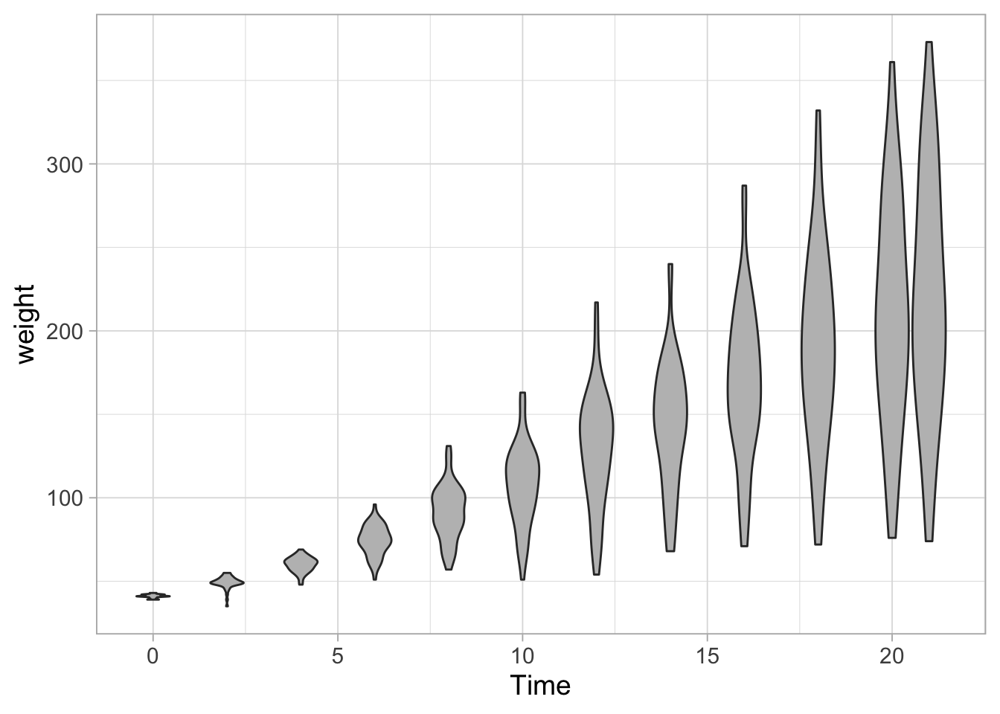
If desired the quantiles can be displayed. These can be user-defined and here we use the quartiles that corresponds to the horizontal lines that define the boxplot. So the middle line is the median:
ggplot(data = ChickWeight, aes(x=Time, y=weight, group=Time)) +
geom_violin(scale = "width", fill="grey", draw_quantiles = c(0.25,0.5,0.75))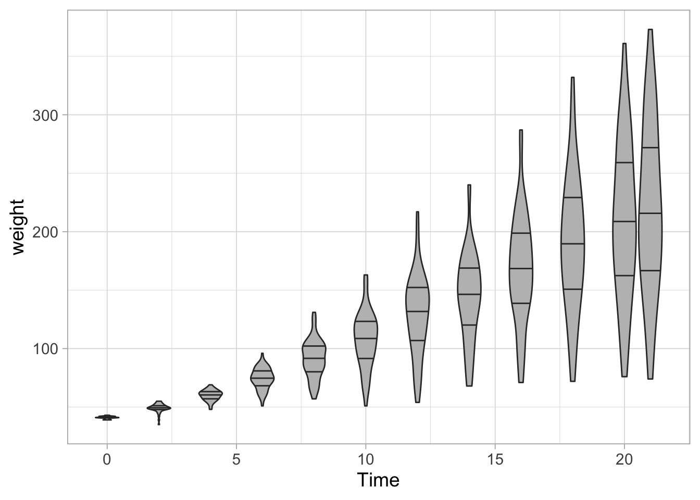
Another option is to combine a boxplot with a violinplot to display the quartiles:
ggplot(data = ChickWeight, aes(x=Time, y=weight, group=Time)) +
geom_violin(scale = "width", fill="grey") +
geom_boxplot(fill="white", outlier.shape = NA, width=0.2)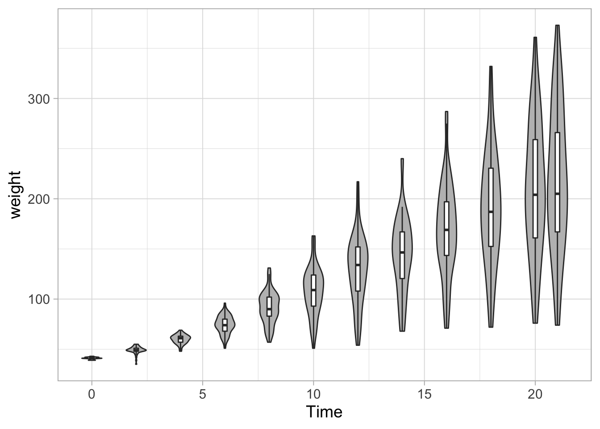
To combine the violinplot with the data:
ggplot(data = ChickWeight, aes(x=Time, y=weight, group=Time)) +
geom_violin(scale = "width", fill="grey") +
geom_jitter(width = 0.25, alpha=0.5)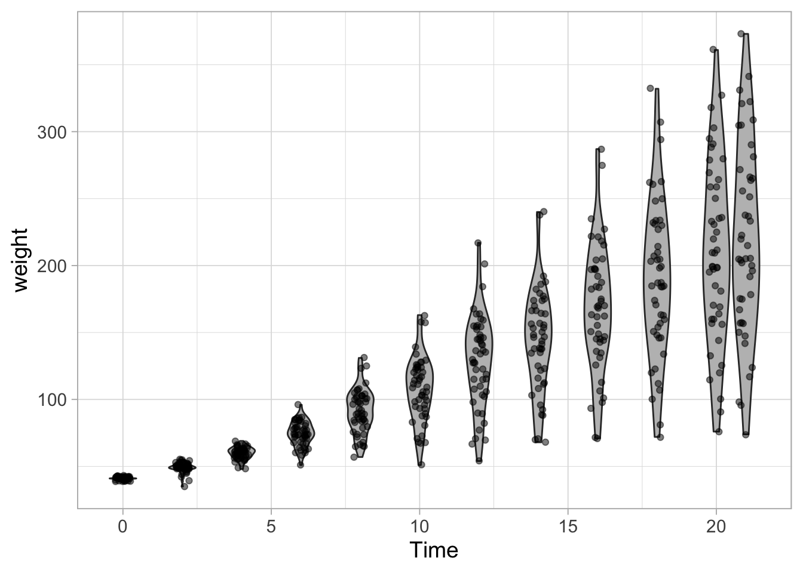
The data are acquired for different Diets so we can map that data to different colors:
ggplot(data = ChickWeight, aes(x=Time, y=weight, group=Time)) +
geom_violin(scale = "width", fill="grey") +
geom_jitter(width = 0.25, alpha=0.5, aes(color=Diet))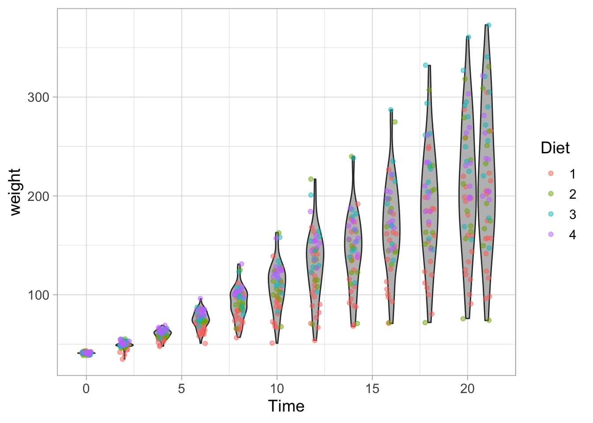
8.5 Facets: Splitting into multiple plots
Let’s say we want to compare the weight for different diets. In ggplot there is a way to ‘split’ the data and show it in multiple graphs. The simplest function is facet_wrap() and let’s see how that works:
ggplot(data = ChickWeight, aes(x=Time, y=weight, group=Time)) +
geom_violin(scale = "width", fill="grey") +
geom_jitter(width = 0.25, alpha=0.5, aes(color=Diet)) +
facet_wrap(~Diet)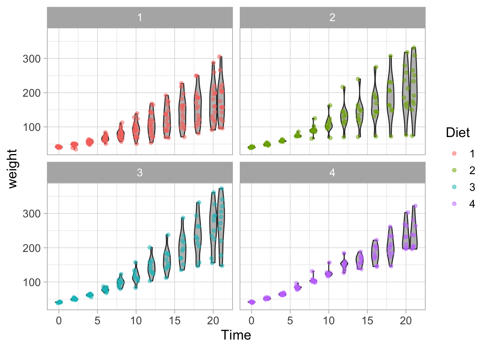
The facet_wrap() function calculates the optimal layout, but it can be defined by ncol (or nrow):
ggplot(data = ChickWeight, aes(x=Time, y=weight, group=Time)) +
geom_violin(scale = "width", fill="grey") +
geom_jitter(width = 0.25, alpha=0.5, aes(color=Diet)) +
facet_wrap(~Diet, ncol = 4)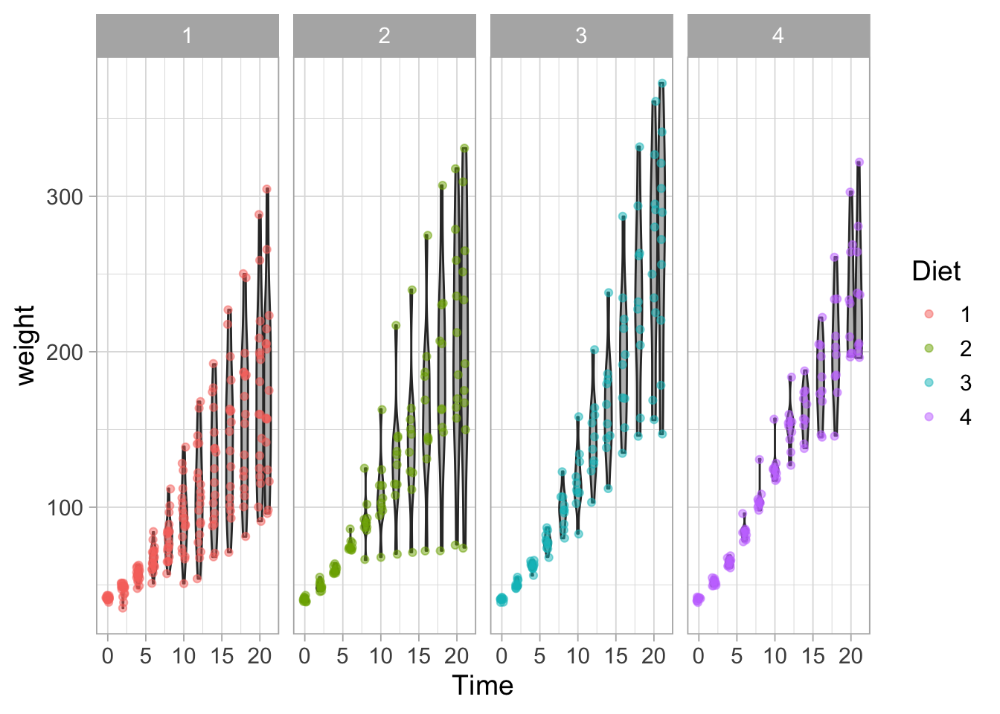
The use of facet_wrap() is particularly powerful when the data has several conditions. Another, similar function, is facet_grid() which allows splitting the data according to two parameters:
ggplot(data = ChickWeight, aes(x=Time, y=weight, group=Time)) +
geom_violin(scale = "width", fill="grey") +
geom_jitter(width = 0.25, alpha=0.5, aes(color=Diet)) +
facet_grid(Diet~Time, scales = "free_x") +
theme(axis.text.x = element_blank()) #Removes the Time labels from the x-axis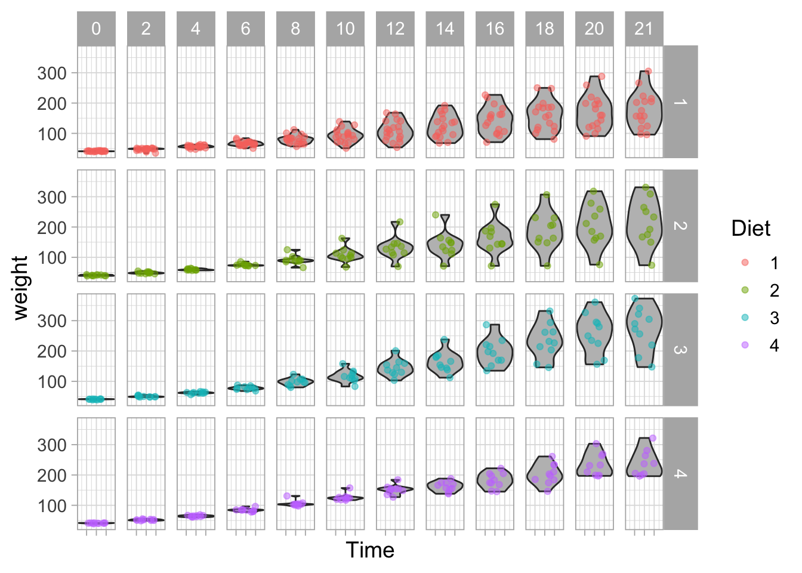
In the example here, it may not be the best idea to split the Time in different plots, but it illustrates how facet_grid() can be used.
8.6 A single distribution
Let’s have a look at the combined data of the first and last week from diet 3. This can be achieved in multiple ways. For instance we can generate a new dataframe. But we can also filter the data and feed it directly into ggplot with the pipe operator:
ChickWeight %>% filter(Diet==3) %>%
filter(Time %in% c(0,2,4,6,16,18,20,21)) %>%
ggplot(aes(x=Diet, y=weight)) +
geom_violin(scale = "width", fill="grey90") +
geom_jitter(width = 0.25, alpha=1, size=5)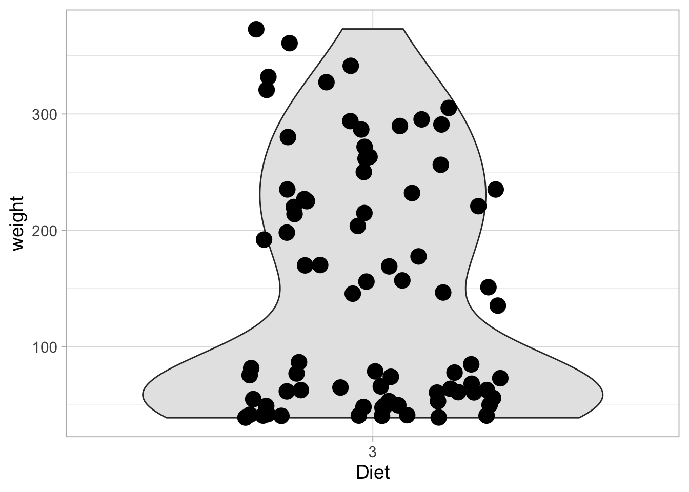
To generate a new dataframe:
ChickWeight_sub <- ChickWeight %>%
filter(Diet==3) %>%
filter(Time %in% c(0,2,4,6,16,18,20,21))8.6.1 A single violinplot
Since we have combined data from the first and last week, we see a bimodal distribution. This is nicely visualized with the violinplot. The violinplot shows the distribution of the data between the two extremes. The violinplot shows the estimated density distribution of the data. This ranges from the minimal to the maximal value of the data. To extrapolate the distribution we can use trim=FALSE:
ggplot(ChickWeight_sub, aes(x=Diet, y=weight)) +
geom_violin(scale = "width", fill="grey90", trim = FALSE) +
geom_jitter(width = 0.25, alpha=1, size=5)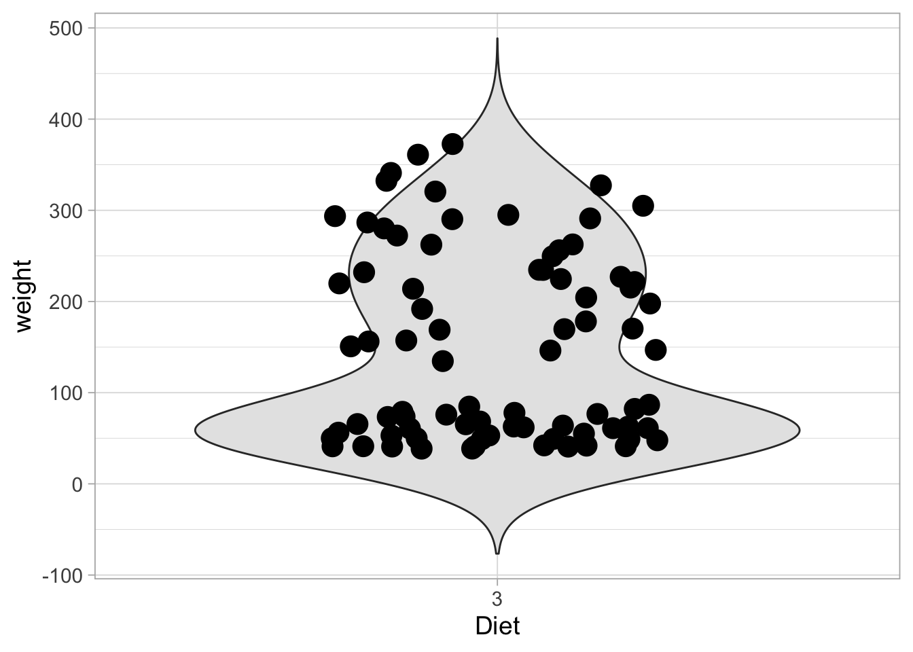
8.6.2 Density plot
The violinplot is much like a smoothened hisogram. We can plot one side of the violinplot and in this case it is called a density plot:
ggplot(ChickWeight_sub, aes(y=weight)) +
geom_density(fill="grey90")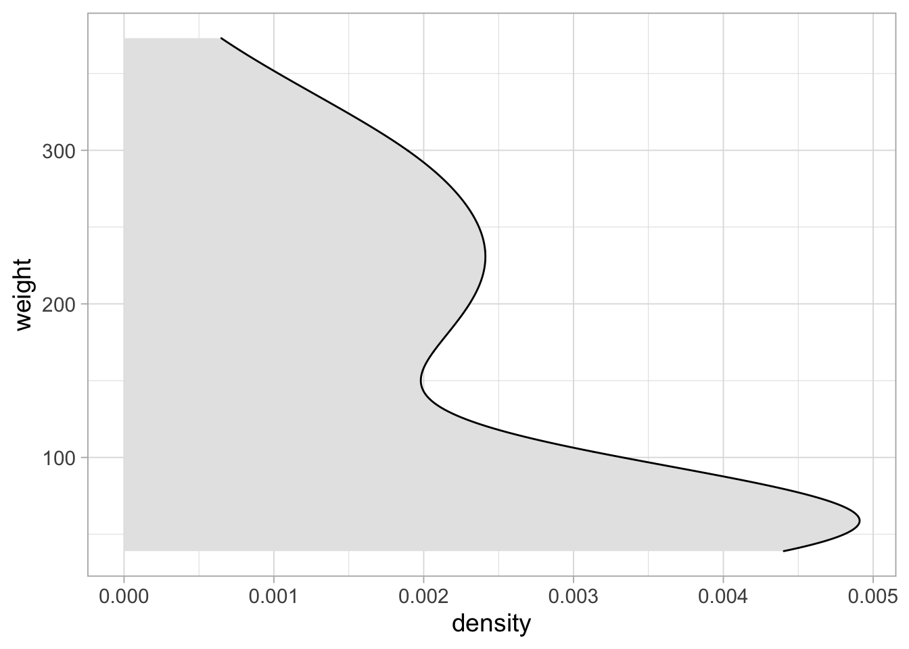
These plots are typically rotated 90 degrees:
ggplot(ChickWeight_sub, aes(x=weight)) +
geom_density(fill="grey90")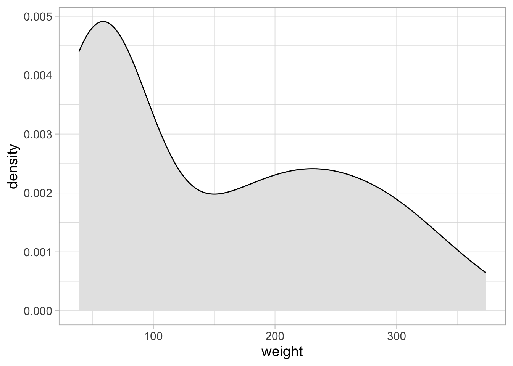
To add the data we can use geom_rug():
ggplot(ChickWeight_sub, aes(x=weight)) +
geom_density(fill="grey90") +
geom_rug()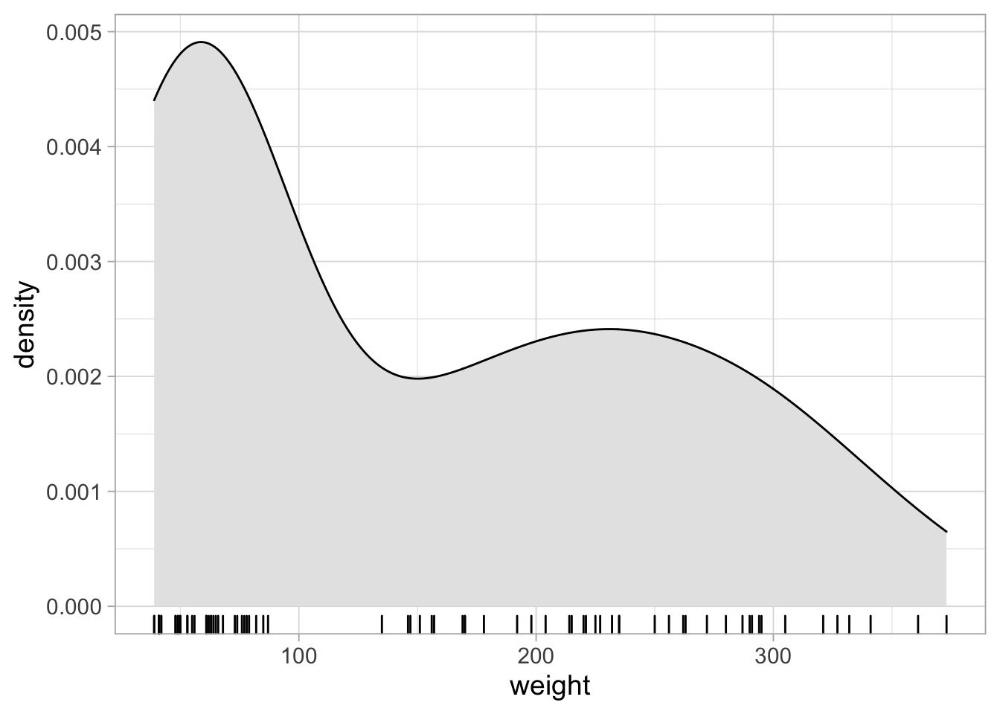
8.6.3 Histogram
To display these data as a histogram instead:
ggplot(ChickWeight_sub, aes(x=weight)) +
geom_histogram()## `stat_bin()` using `bins = 30`. Pick better value with `binwidth`.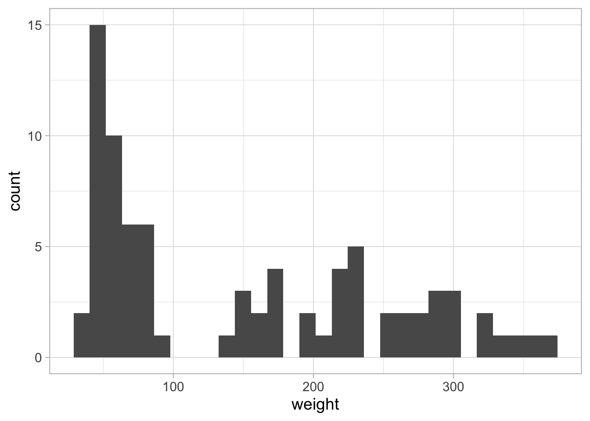
And we can combine them:
ggplot(ChickWeight_sub, aes(x=weight)) +
geom_histogram() + geom_density()## `stat_bin()` using `bins = 30`. Pick better value with `binwidth`.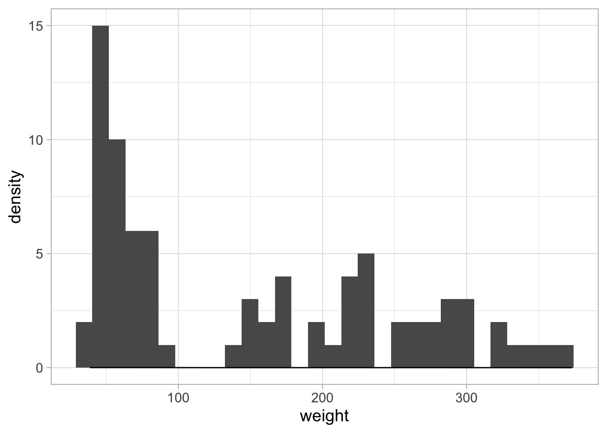
The density estimate is invisible, since it has a different amplitude. To solve this:
# From: https://stackoverflow.com/questions/37404002/geom-density-to-match-geom-histogram-binwitdh
ggplot(ChickWeight_sub, aes(x=weight)) +
geom_histogram(binwidth = 10, fill="grey80") +
geom_density(aes(y = 10*..count..), fill="black", alpha=0.5)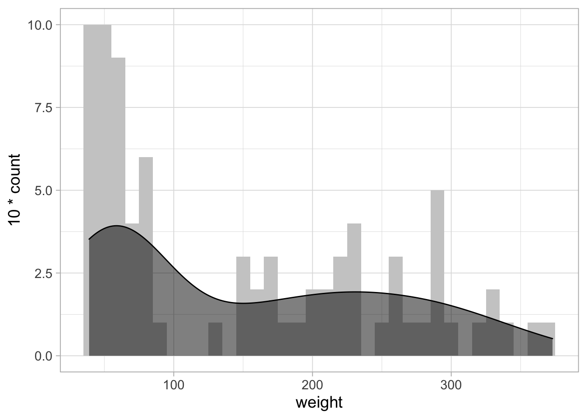
One thing that is not so nice is the margin between the plot and the axis. To remove the margin:
# From: https://stackoverflow.com/questions/37404002/geom-density-to-match-geom-histogram-binwitdh
ggplot(ChickWeight_sub, aes(x=weight)) +
geom_histogram(binwidth = 10, fill="grey80") +
geom_density(aes(y = 10*..count..), fill="black", alpha=0.5) +
scale_y_continuous(expand = c(0,NA))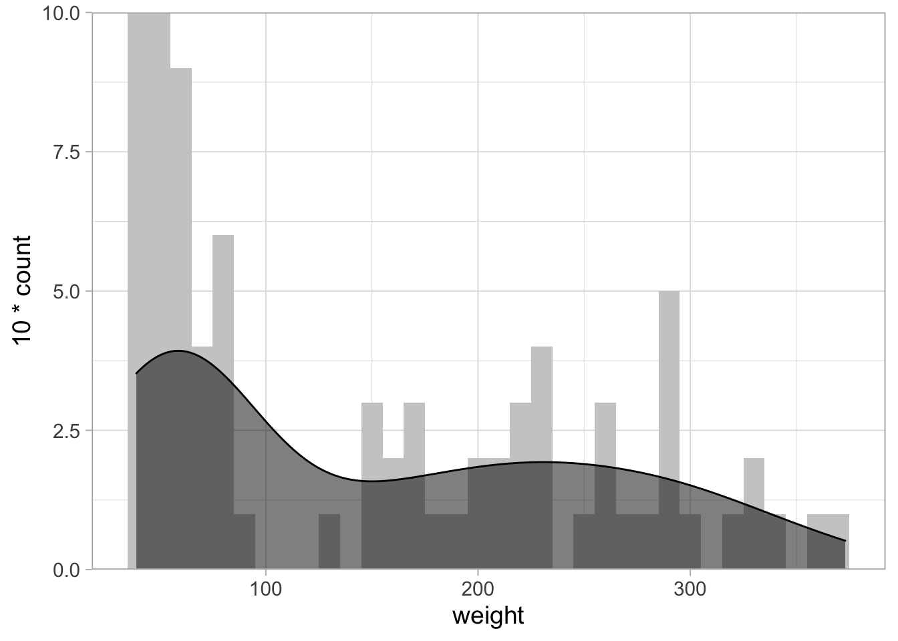
To further improve this, we can set the maximal value of the x-axis:
# From: https://stackoverflow.com/questions/37404002/geom-density-to-match-geom-histogram-binwitdh
ggplot(ChickWeight_sub, aes(x=weight)) +
geom_histogram(binwidth = 10, fill="grey80") +
geom_density(aes(y = 10*..count..), fill="black", alpha=0.5) +
scale_y_continuous(expand = c(0,NA), limits = c(0,11))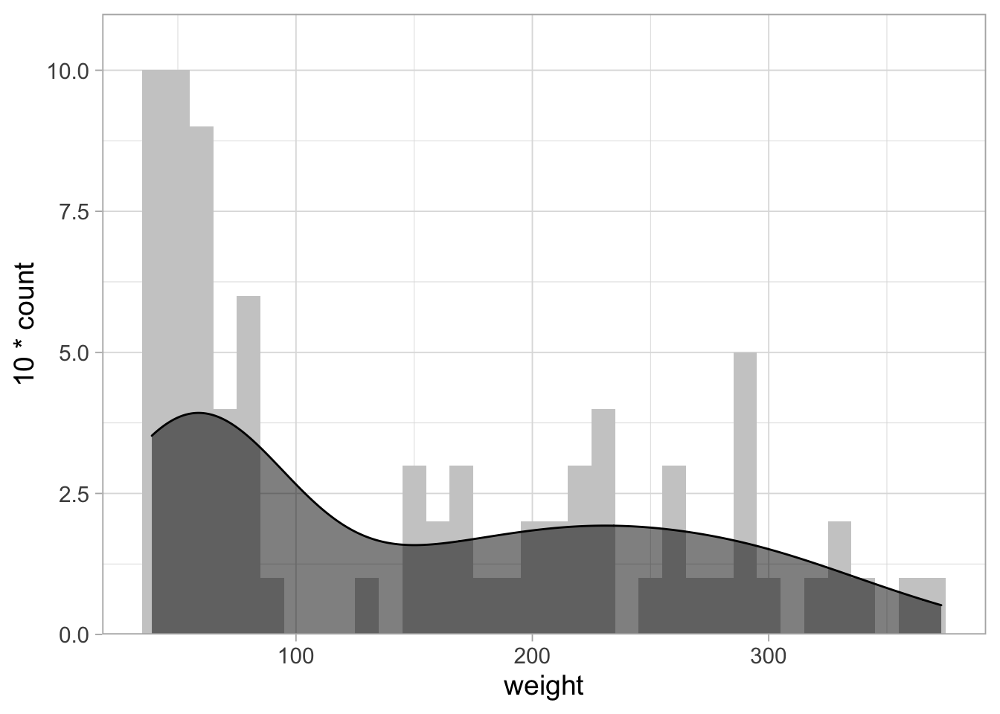
8.7 Two distributions
8.7.1 Histogram & Density
It is possible to overlay multiple histograms and/or density curves:
ChickWeight %>% filter(Diet %in% c(2,3)) %>%
filter(Time %in% c(0,2,4,6,16,18,20,21)) %>%
ggplot(aes(x=weight, fill=Diet)) +
geom_histogram(binwidth = 10) +
geom_density(aes(y = 10*..count..), alpha=0.5) +
scale_y_continuous(expand = c(0,NA), limits = c(0,21))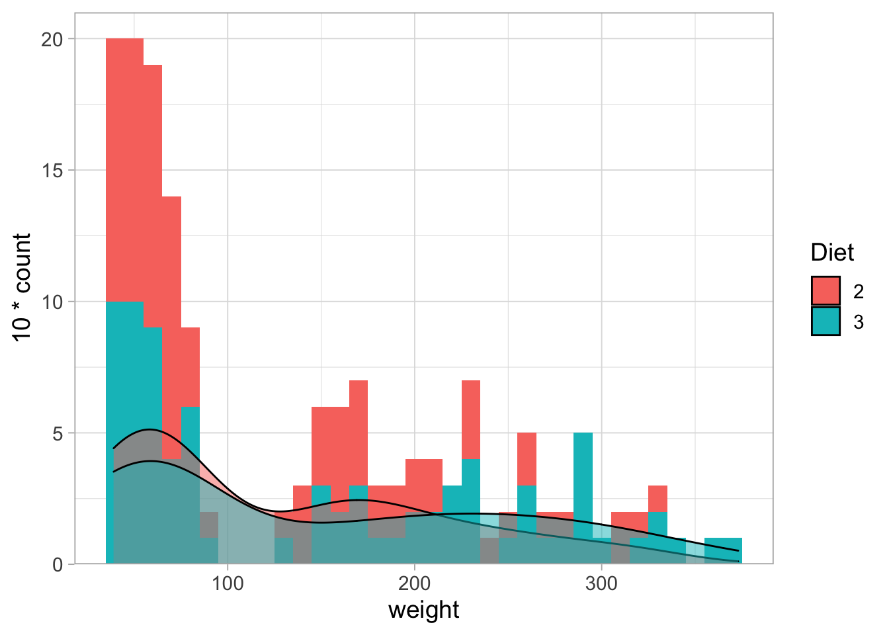
By default the histograms are stacked (unlike the density plot), making it difficult to compare them. This can be solved and requires tranparancy because they partially overlap.
ChickWeight %>% filter(Diet %in% c(2,3)) %>%
filter(Time %in% c(0,2,4,6,16,18,20,21)) %>%
ggplot(aes(x=weight, fill=Diet)) +
geom_histogram(binwidth = 10, alpha=0.8, position="identity") +
geom_density(aes(y = 10*..count..), alpha=0.5) +
scale_y_continuous(expand = c(0,NA), limits = c(0,11))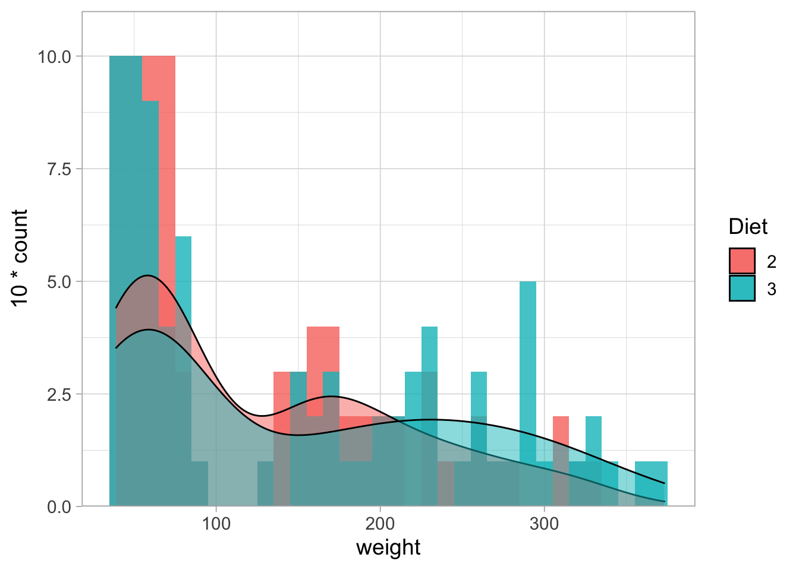
8.7.2 Splitting into two plots
However, overlaying histograms is usually not a great idea as this generates a cluttered plot. One way to solve this is by splitting the data with facet_wrap(). We can use labeller to use both the parameter as its value for labeling the plots. In this case the legend can be removed as it is redundant, allowing more space for the data:
ChickWeight %>% filter(Diet %in% c(2,3)) %>%
filter(Time %in% c(0,2,4,6,16,18,20,21)) %>%
ggplot(aes(x=weight, fill=Diet)) +
geom_histogram(binwidth = 10, alpha=0.8, position="identity") +
geom_density(aes(y = 10*..count..), alpha=0.5) +
scale_y_continuous(expand = c(0,NA), limits = c(0,11)) +
facet_wrap(~Diet, labeller = label_both) +
theme(legend.position = "none")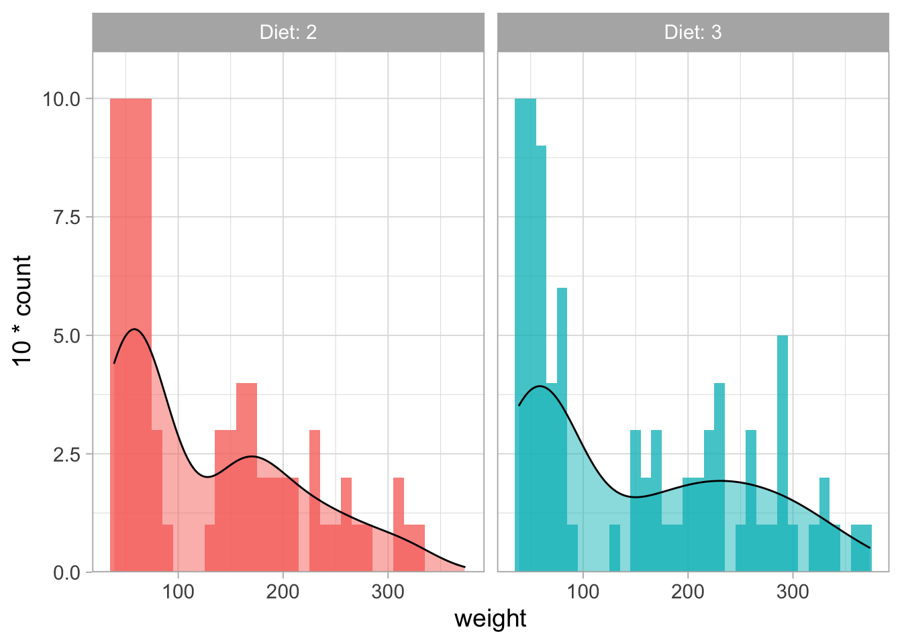